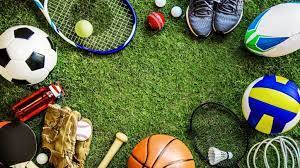

Sobre o city:
localizada no centro da cidade a praticas de esportes nosso city foi criado em agosto de 2022,com objetivo de dar dicas a todos que queiram melhorar em algum esporte.
Nossa missão é: "Proporcionar auto-estima e qualidade de vida aos clientes".
Oferecemos profissionais experientes e antenados às mudanças no mundo da moda. O atendimento possui padrão de excelência e agilidade, garantindo qualidade e satisfação dos nossos clientes.
telefone para contato:(45) 88622-3607
1-BASQUETE
Melhoria de salto: Treino focado em aumento de velocidade, em aumento fisico das pernas, priorizar saltos pequenos no começo para cada salto pequeno se esforçar mais.
2-FUTSAL
Tente fazer com que a bola "corra" mais que você:É uma estratégia que poupa energia.Se correr o tempo todo para todos os cantos do campo,em 10 minutos você ficará cansado. Lembre-se que a bola sempre correrá mais que você.Portanto, o melhor a fazer é "rodar" a bola com rapidez, e não com rapidez, e não correr com ela.Poupe sua energia para quando realmente precisar correr, então use e abuse dos passes rápidos.